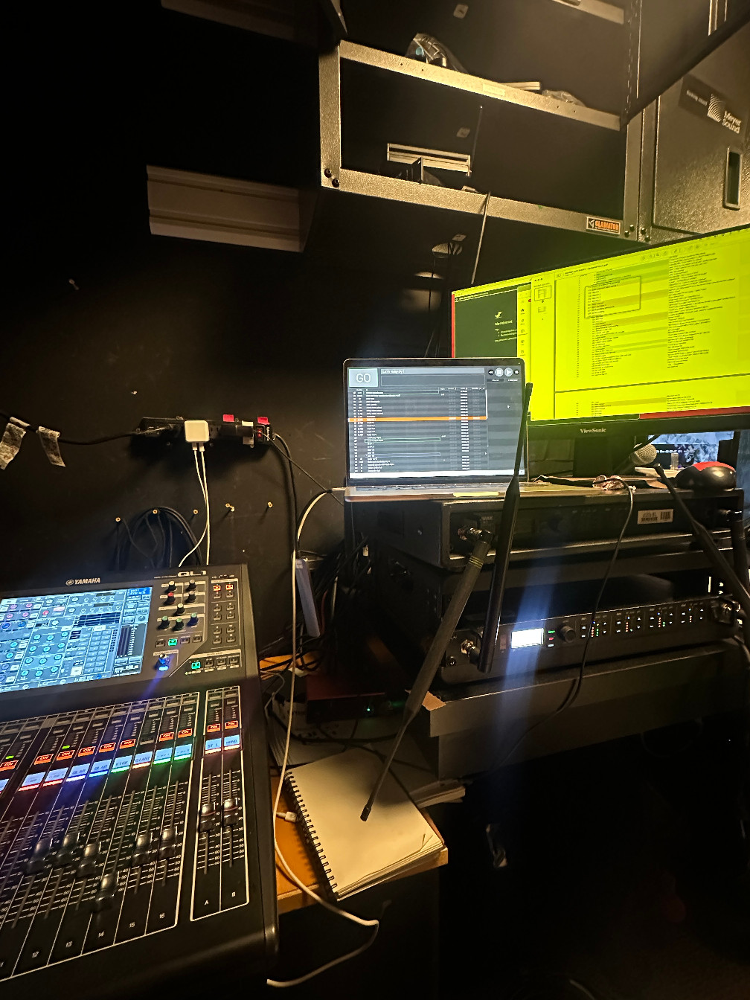
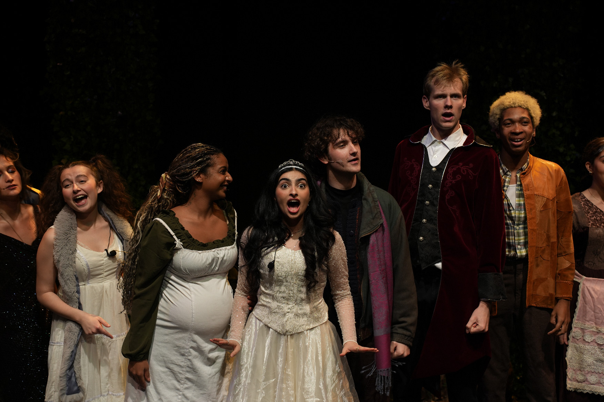
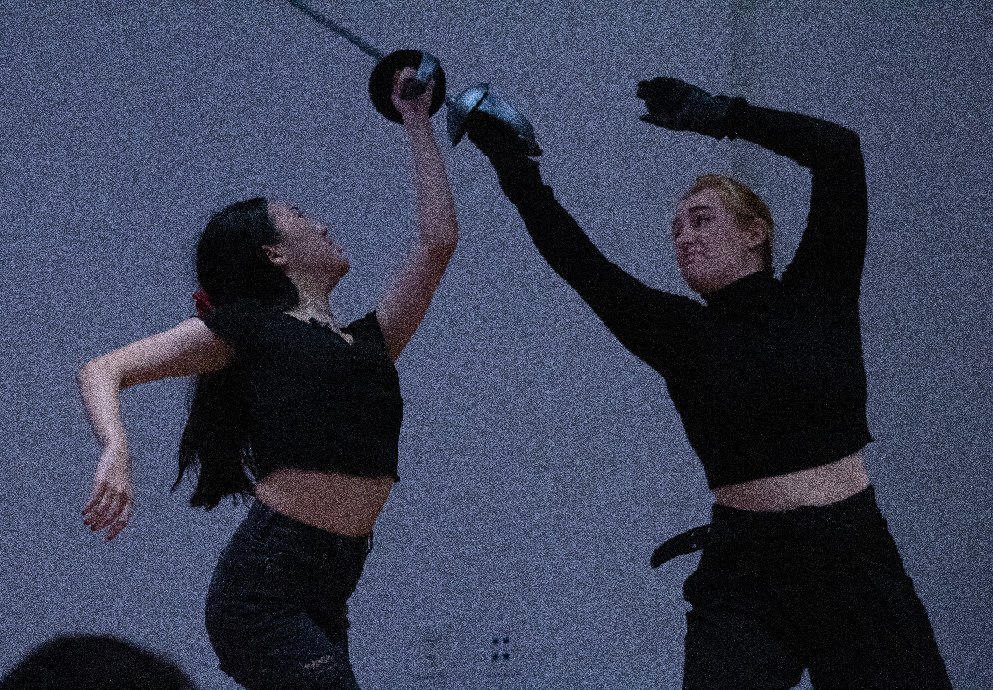

Nadia Othman resume work about


Live Music & Theater
I have done A1, A2, and stagehand work for various productions and venues. I have experience with QLab and Dante as well as Yamaha, Solid State Logic, Mackie, and Behringer consoles. Experience includes:
- Audio crew, Signature Theatre
April 2025-Present
- Load-in, Oratorio
- Board-op sub, EURYDICE
- Load-in, Lunar Eclipse
- Stagehand, Audible Difference Inc.
September 2025-Present
- Installation for New York Fashion Week Fall 2025 shows including Tory Burch and Public School New York.
- Front of House Engineer, The Greene Space at WNYC
January 2025-Present
- Center for an Urban Future
- Tenement Museum and WNYC Present: The Triangle Fire
- Grammy Museum: Mon Rovia
- NYCETC (New York City Employment & Training Coalition)
- Grammy Museum: Yola
- A1, La MaMa Experimental Theatre Club, mutiple events
June 2024-Present
- La MaMa Moves! Festival
- Coffeehouse Chronicle #179: Bloolips
- The Magic of Light, Dir. Virlana Tkacz
- Fowl Play: Conference of the Birds, Dir. Vít Hořejš and Bonnie Sue Stein
- Small Forward, Dir. Natalia Kaliada and Nicolai Khalezin
- Hidden Faces and The Harvest, The Japanese Folk Dance Institute of NY
- SpaceBridge, Dir. Irina Kruzhilina
- Audio crew, The Public Theater
October 2024-Present
- Load In, Goddess
- Shop Prep, Glass. Kill. What If If Only. Imp.
- Strike Crew, Good Bones
Into The Woods
November 2024
I sound designed and mixed a production of Into the Woods, produced by Make Lemonade Productions and directed by Jenna Roth. For the effects design, I sourced from platforms such as Splice and Epidemic Sound, but I also recorded things on my Zoom H4N, and I edited in Logic Pro. I used Qlab 4 for playback during the show. For system design, I had to be efficient as we were unable to individually mic each one of the fifteen actors with the available resources and space. Ultimately, eight of the actors were miked with lavaliers and ear-worn microphones, with additional amplification for the whole ensemble using boundary microphones. Additionally, there was a live band consisting of drums, strings, woodwind, brass, and multiple keyboards. Signal flow involved using a Yamaha Rio and Dante in order to mix all instruments and microphones on a Yamaha QL1.
Photo courtesy of Nick Bella from 3 Jokers Entertainment


Princess Hamlet
September 2024
Directed by Sophie Leiton-Toomey and Heaven Lei Lucas, Princess Hamlet is a gender-bent version of the iconic Shakespeare play, set in the modern day Hamptons. I sourced sounds from Splice and Epidemic Sounds and edited and mixed in Logic Pro. I also designed and composed various sounds using Logic's built-in synthesizers. Everything was compiled in QLab 4, which I control during the shows. Princess Hamlet was performed during the RJ Theater Circle Festival.